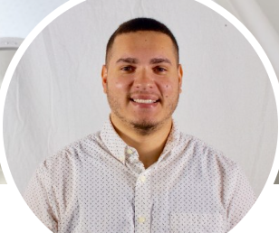

Spencer Valentine
Contact Me: 407-749-7575 | spencer.valentine27@gmail.com | GitHub | Linkedin
Summary:
Detail-oriented web developer with experience in creating responsive, user-friendly websites and applications. Proficient in front-end and back-end technologies, including HTML, CSS, JavaScript, and PHP. Strong problem-solving skills and a passion for clean code and innovative solutions.
Education
- **Allatoona High School, Acworth, GA**
High School Diploma, May 2015
Skills
Web Development Skills
- HTML, CSS, JavaScript
- PHP and MySQL
- Responsive Web Design
- Version Control (Git)
- API Integration
- Front-End Frameworks (e.g., React, Bootstrap)
- Cross-Browser Compatibility
- Debugging and Troubleshooting
Sales and Customer Service Skills
- Customer Relationship Management (CRM)
- Sales Negotiation and Closing
- Active Listening and Communication
- Problem-Solving and Conflict Resolution
- Team Collaboration
- Time Management and Organization
- Product Knowledge and Upselling
- Client Needs Assessment
Experience
Glencoco Orlando, Florida
Sales Development Representative Aug 2024 - Present
- Schedule, set, and confirm Qualifed Appointments within multiple SaaS verticals (FinTech, AdTech, Payment
Software, LegalTech, and Manufacturing/Industrial Companies)
- Executed +150 cold outbound calls daily to potential leads, resulting in a 5% increase in scheduled appointments.
- Consume +5 hours of Relevant Company and prodcut training on a weekly basis and follow up with over 2k
leads.
Ultimate Medical Academy Tampa, Florida
Continuing Re-entry Student Advisor Oct 2021 - May 2024
- Managed 140+ daily calls, advising prospective students on allied healthcare programs and assisting with course
selection and academic planning.
- Conducted 10+ daily follow-ups, providing guidance on course questions and addressing academic concerns.
- Provided ongoing academic support to 115 students weekly, ensuring they stay on track for program completion.
Rhino Orlando, Florida
Stage Hand May 2021 - Jan 2024
- Assist in the setup and breakdown of stage equipment and props for performances in concert arena/venue.
- Operate lighting, sound, and other technical elements during live events.
- Collaborate with production teams to ensure seamless execution of state setups and changes.
Autotex Sanford, Florida
Data Entry Clerk Mar 2021 - Jul 2021
- Precisely input and updated data into the internal database with a keen eye for detail.
- Utilized data management tools to organize and maintain information efficiently.
- Collaborated with team members to ensure accurate and timely completion of tasks.
Florida Department of Economic Opportunity
Claims Agent Jan 2021 - Mar 2021
- Answered a high volume of inbound calls and conducted thorough investigations into insurance claims, gathering
information from various sources.
- Maintained detailed documentation throughout the process, ensuring compliance with company policies.
Alorica Orlando, Florida
IT Tech Support Sepcialist May 2020 - Dec 2020
- Provide advanced technical assistance, troubleshooting, and support related to operating systems.
- Create and update technical and clinical documentation.
- Collect information in a more organized way to improve support, processes, and communication
F.I.R.S.T Institute Orlando, Florida
Admissions Representative Oct 2019 - Apr 2020
- Reach out to prospective students via phone, text, and email; take incoming calls and place outbound calls for
enrollment.
- Interview prospective students to determine their motivation for attending school.
- Interact proactively with Admissions, Financial Aid, Student Advising, and Faculty members.
Los Angeles Film School Orlando, Florida
Admissions Representative Jan 2018 - Sep 2019
- Explain educational programs, outcomes, and services to prospective students and clients compliantly.
- Inquire with prospective students about verification and follow-up to ensure enrollment deadlines are met.
- Interact proactively with Admissions, Financial Aid, Student Advising, and Faculty members.
Hilton Grand Vacations Orlando, Florida
Sales Advisor Jan 2017 - Dec 2017
- Handled 50+ daily inbound calls, presenting Hilton vacation packages to potential customers.
- Followed up with 30+ leads daily via calls and emails to convert inquiries into sales.
- Consistently closed 3-5 sales per week, contributing to a monthly revenue goal of $80,000+.
Primerica Orlando, Florida
District Financial Sales Agent Dec 2015 - Jan 2018
- Conducted 5-10+ daily client meetings to assess financial needs and recommend suitable life insurance policies and
financial products.
- Followed up with 10+ prospects and existing clients daily to provide policy updates, answer questions, and cross-sell
additional services.
- Processed applications and managed documentation for 5-10 new policies weekly, ensuring accuracy and compliance
with company guidelines.